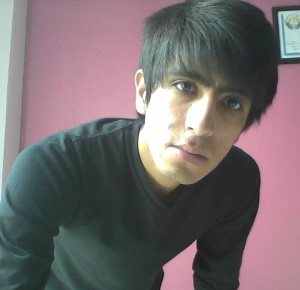

Daniel Iván Hernández Portillo
My picture

My Biography
My name is Daniel Iván Hernández Portillo, I was born on December 10 in 1994 in Dolores Hidalgo,
C.I.N. Guanajuato. I have five brothers, I am the second largest, and presently I am studying in
the UTNG in the degree of computer systems. I like help to people y make them believe that we can
change the society and the world that we live at present, this with the help of technology that is
constantly changing.
How to Contact me
Personal Data
|
| Phone: |
4181105548 |
| Address: |
Roble #13 Fraccionamiento Arboledas |
My Goals.
My personal and professional goals are to:
- Get the certification that at present I am taking.
- Making all the projects and passing them.
- Finish my major as an engineer in technologies and communication.
- Passing all my subject.
- Doing my estadias.
- Study the master’s degree in computer systems.
- Study a doctorate in engineering systems.
- Design applications that help the health sector.
- Have my enterprise of software development.
- Can implement my knowledge in technologies for create a better world.
My Attributes and Skills.
My most important attributes and skills include:
- I have ability of leader so I have influence on the others.
- I have ability of learn almost everything very fast.
- I am very persistent and I never surrender me.
- I listen to people and I give advice.
- I always suggest solutions, for me there is no “You can´t”.
My Hobbies.
My most favorite things to do include:
- I like to watch the scientific programs.
- Do sport to have good health.
- I like to teach my brothers on new technologies.
- Play online video games.
- I like to listen to music of different genres.
If I was rich and independent.
I will support the education, creating institutions where people can study and grow as professionals in the future.
Places I like to visit and not visit.
Places that I'd like to visit.
If I can visit a place in the world, I will visit the European continent,
to learn about their countries so for in the European Continent is the technology
more advanced. .
Places that I wouldn't want to visit.
I think there is not place that I would not visit, because each is unique in the world.
Please visit my blog.
Blog